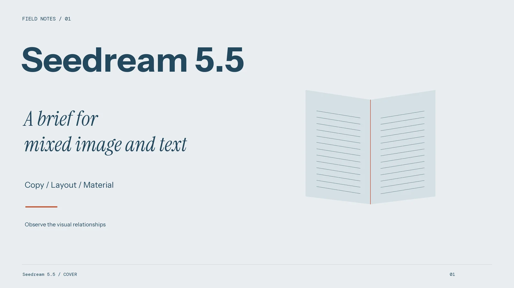
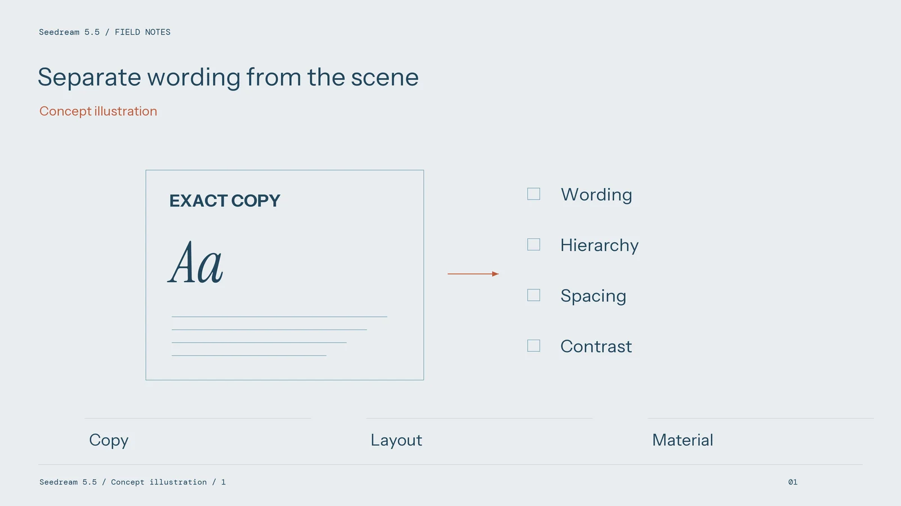
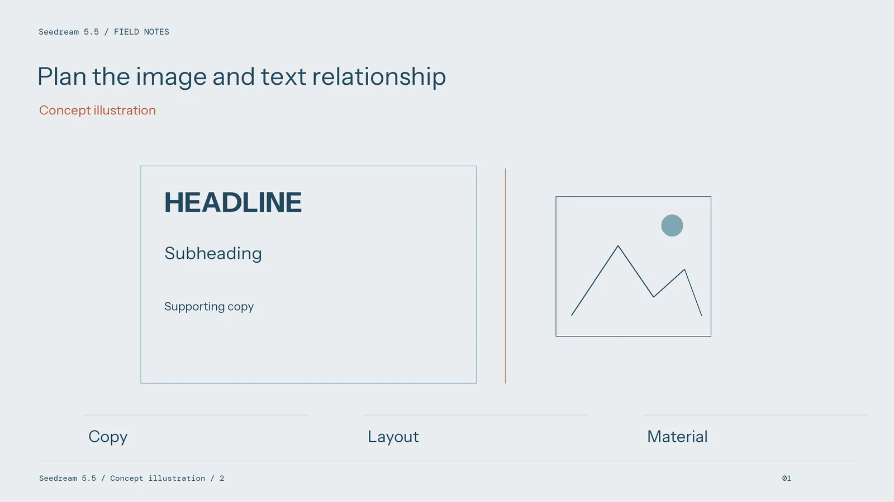

Seedream 5.5: Planning a Commercial Image Before Calling It a Design Asset

A commercial image becomes useful when another person can review, revise, and deliver it against a clear brief. Appearance matters, but so do exact wording, product details, crop options, and editable source files. A practical way to evaluate Seedream 5.5 is to follow one image through those decisions instead of judging only the most attractive initial result.
Start with the delivery, then define the image
Write down where the asset will appear and what the viewer must understand. A product listing needs a recognisable item and an honest presentation of its features. An event poster needs a readable name, date, and location. A concept presentation may allow more interpretation, provided the team can distinguish the proposed direction from final artwork.
Separate requirements into visual elements and exact information. Describe the subject, composition, environment, and lighting in one part of the brief. Keep approved names, numbers, and copy in a separate text document. This prevents an attractive visual variation from silently changing essential information.
Use the intended output dimensions to establish hierarchy. Decide which detail should remain clear in a small preview, which can reward closer inspection, and which belongs in accompanying copy rather than inside the image.

Give references a defined job
A reference photograph can communicate product geometry, fabric texture, or a lighting direction. Those are different roles. Identify the purpose of each reference and state which elements should remain fixed. Avoid asking one image to define an exact product, a new pose, a different material, and an unrelated graphic style simultaneously.
The workspace presents several model choices. Check the controls offered by the selected mode before planning a process around a particular reference limit, output size, or editing tool. Keep that choice with the project record so a colleague can understand which route produced the candidate.
A focused initial trial is easier to interpret. For example, establish the product and viewing angle before exploring background colour. When the composition is usable, test a different light direction while keeping the remaining brief stable.
Treat lettering as something to inspect
Put required wording in clearly separated lines and describe its hierarchy. Distinguish the main name from a subtitle or supporting information. Describe the surface carrying the text, such as a paper label or illuminated sign, because material and perspective affect the intended appearance.

Then compare the result character by character with the approved copy. Check spelling, punctuation, numeral order, and alignment. Inspect the image at its intended viewing size as well as at full resolution. A phrase that appears convincing in a thumbnail can still contain an incorrect letter.
If exact typography requires manual finishing, retain the approved text as an editable layer in the final design file. The acceptance criterion is a correct, readable asset; a particular production shortcut is secondary.
Keep revision and handover practical
For a local change, write down both the requested alteration and the surrounding details that must remain. Compare the revised version with the original, including edges, reflections, and areas outside the intended edit. A useful correction should not introduce a new problem elsewhere.
Before handover, record the selected image, current copy, crop variants, and remaining finishing work. Check colour and sharpness in the software and output process used for the actual delivery. Screen appearance alone does not approve a print job.
Keep the brief and review notes beside the chosen Seedream 5.5 result. That small project record turns an interesting picture into an asset the team can explain, reproduce as a workflow, and revise without starting the discussion again.